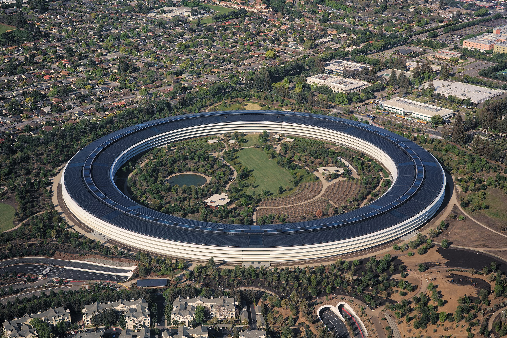

Apple
Apple — американская корпорация, производитель персональных и планшетных компьютеров, аудиоплееров, смартфонов, программного обеспечения. Один из пионеров в области персональных компьютеров и современных многозадачных операционных систем с графическим интерфейсом.
Название
Название фирмы происходит от англ. apple («яблоко»), также изображение яблока использовано в логотипе. До 9 января 2007 года официальным названием корпорации на протяжении более 30 лет было Apple Computer, Inc.. Отказ от слова Computer в названии демонстрирует смену основного фокуса корпорации с традиционного для неё рынка компьютерной техники на рынок бытовой электроники.
История
Компания основана в Калифорнии Стивом Джобсом, Рональдом Уэйном и Стивом Возняком, собравшими в середине 1970-х годов свой первый персональный компьютер на базе процессора «MOS Technology 6502». Продав несколько десятков таких компьютеров, молодые предприниматели получили финансирование и официально зарегистрировали фирму Apple Computer, Inc. 1 апреля 1976 года. «Apple I», выпущенный в 1976 году, не был первым программируемым микрокомпьютером. Право первенства принадлежало микрокомпьютеру «Альтаир 8800», который был создан Эдом Робертсом и распространялся через каталоги в 1974—1975 годах. Однако «Альтаир» не был «персональным компьютером», поскольку не давал возможности решать с его помощью более или менее серьёзные задачи. В 1976—1977 годах несколькими фирмами были выпущены первые персональные компьютеры, в том числе с 1977 года тысячами продавались компьютеры компаний Commodore и RadioShack. Но первым массовым персональным компьютером, выпускавшимся миллионами экземпляров, стал компьютер Apple II. С 1977 по 1993 годы фирмой Apple выпускались различные модели из линейки 8 (позднее 8/16) разрядных компьютеров «Apple II». В конце 1970-х и начале 1980-х годов «Apple II» и их клоны были самыми распространёнными в мире персональными компьютерами. Было продано более 5 млн компьютеров «Apple II» по всему миру.
Руководство
Apple — публичная компания, её акции торгуются на бирже NASDAQ и Лондонской фондовой бирже. Общее количество выпущенных акций на начало 2011 года составляло 921,28 млн шт. По состоянию на 26 мая 2010 года рыночная стоимость компании (enterprise value) Apple превысила таковую у компании Microsoft. По состоянию на март 2011 года рыночная капитализация компании оценивалась в $309,5 млрд. В августе 2011 года Apple стала самой дорогой компанией мира по рыночной капитализации, которая на 10 августа составила $338,8 млрд[15]. По состоянию на 9 февраля 2012 года капитализация Apple достигла отметки в $456 млрд. Это превышает общую стоимость ближайших конкурентов Apple, Google и Microsoft, вместе взятых. На август 2018 года Apple является лидером по рыночной капитализации с суммой в $1 трлн, хотя в начале 2016 года на некоторое время уступала лидерство Alphabet Inc, материнской компании Google.
Деятельность
Компания продаёт часть своей продукции через сеть принадлежащих ей розничных магазинов Apple Store (всего более 400[51]) на территории США, Канады, Японии, Великобритании и других стран. А также занимается реализацией различных товаров (не только своего производства) через свои онлайн-магазины (Apple Store (online), iTunes Store и App Store), которые в 2013 году принесли компании около $18,3 млрд, что поставило компанию Apple на 2-е место после Amazon.com среди компаний интернет-ретейлеров.
Маркетинг
Маркетинговая политика Apple кажется некоторым достаточно агрессивной. Например, пользователи продуктов Apple на платформе Microsoft Windows могут получить сообщения об обновлениях продуктов, которые у них не установлены, так как опции установки этих продуктов включены по умолчанию. В частности, пользователям Safari может предлагаться установить iTunes и QuickTime; чтобы от этого отказаться, они должны сами снять соответствующие галочки в диалоге обновления. Так, в марте 2008 года Apple начала предлагать пользователям iTunes для Windows установить свой веб-браузер Safari. При этом опция установки браузера включена по умолчанию, и описание у неё состоит исключительно из рекламы и ссылки на сайт.